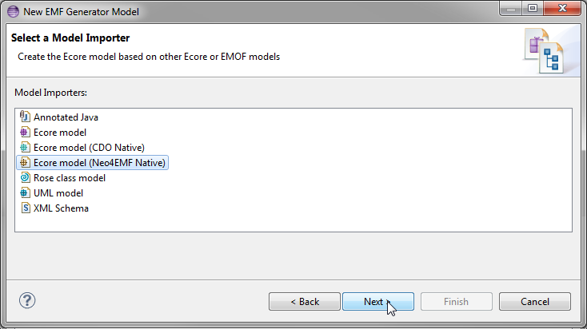
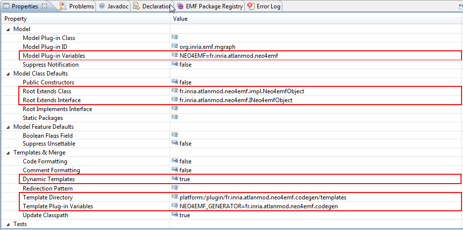

Generating java code
Neo4EMF provides several ways to the generator model that generates the Java API and Implementation from a given ecore model:
- From scratch :
- New EMF Project
- Existing EMF Project
- From an existing genmodel
Create Generator model from scratch
To create an EMF project with a neo4EMF compatible genModel from scratch, first you create an EMF project using the new project wizard, then you select EMF project wizard, and click next. After entering a name for your project, select Ecore model (Neo4EMF Native) as depicted below. And finally import/load your model.
Create a new generator model
In the new project wizard, you select EMF Generator model and you click next. After choosing a location and a name for your genmodel click next, and select Ecore model (Neo4EMF Native) as depicted below. And finally load the model for which you want to create the genmodel.Migrate from an existing genmodel
In case you already have a genmdodel, you can simply migrate to a neo4EMF pre-configured genmodel. See the picture afterwards.
Generate Java code
Before generating the model make sure that your genmodel is pre-configured as depicted by the figure below : Therewith double-click the genModel and the right-click its windows and generate model code as depicted by the later figure :

Neo4EMF Resource creation :
// Create the resourceSet
ResourceSet rSet = new ResourceSetImpl();
// Create an URI with neo4emf as protocol
URI uri = URI.createURI("neo4emf:/./MyFirstNeo4emfResource");
// Attach this protocol to INeo4emfResourceFactory
// If the relationshipMap is not set don't forget to register the
package
// It is automatically generated
rSet.getResourceFactoryRegistry().getProtocolToFactoryMap().put("neo4emf",
INeo4emfResourceFactory.eINSTANCE.setRelationshipsMap(reltypes
.ReltypesMapping.getInstance().getMap()));
// Create the resource
INeo4emfResource resource = (INeo4emfResource)
rSet.createResource(uri);
// Register the package
EPackage.Registry.INSTANCE.put($package_nsURI$, $package_instance$);
Neo4emf common option :
// TO COME
Import from XMI files :
Neo4EMF offers as well the possibility to import data from XMI into embedded neo4j DB files by using a simple method call // The method takes 3 arguments : 1- xmi file path
//2- the desired path-where to put the DB
//3- path to ecore file
Neo4emfResourceUtil.importFromXMI($xmi_file_path$,
$neo4j_db_folder_path$,$ecore_file_path$ );
Neo4EMF Reflection :
It is also possible to create and edit model elements with the refection API, you just need to set the package's factory instance// set the ePackageFactory to INeoFactory
// package_ is an instance of EPackage
package_.setEFactoryInstance(INeoFactory.eINSTANCE);
EFactory neoFactory = package_.getEFactoryInstance();
// create EObject
EObject neoObject = neoFactory.create((EClass)package_.getEClassifier($class_name$));
// get & set EObject
Object getValue = neoObject.eGet($structural_Featue$);
neoObject = neoObject.eSet($structural_feature$,$new_value$)
Resource management :
Load root objects
to load the root elements of a resource you simply use the load method
Load all Instances of some type
to load all the instances of a given type, you just need to call the AllInstances() method from the resource.Save a resource :
Neo4emf come with a light-weight changelog recorder, so there is no need to add the newly created elements to the resource contents. To save the elements you simply use the save method